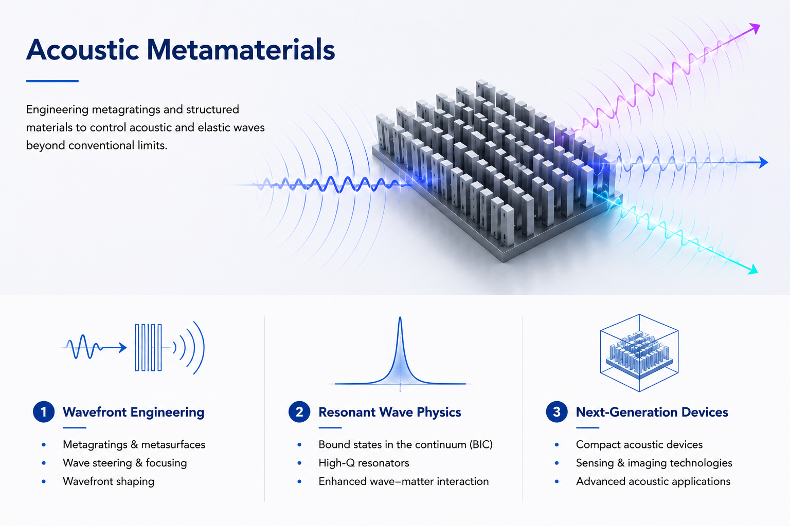
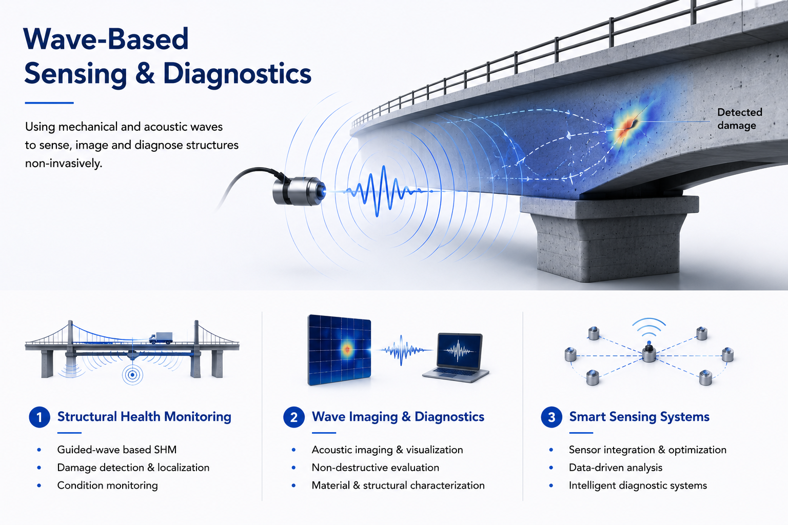
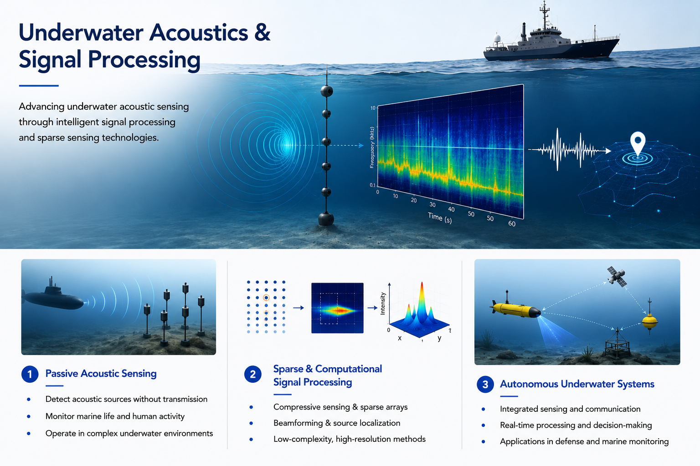
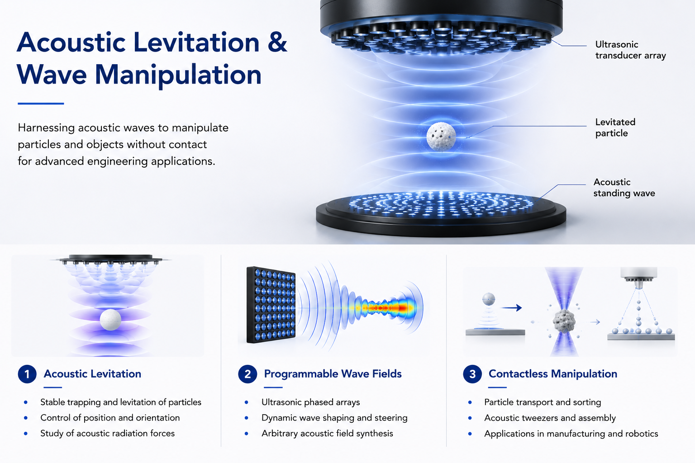

What We Study
Our work spans fundamental physics and applied engineering — from designing structures that bend waves to sensing systems that listen with them.

Acoustic Metamaterials & Wave Control
We investigate and design engineered structures that can control waves in ways not possible with conventional materials. Our interests include acoustic metamaterials, metagratings, and resonant structures that can redirect, focus, filter, or enhance acoustic waves.
Acoustic Metagratings · Wave Manipulation · BIC
Wave-based Sensing & Diagnostics
Many engineering systems reveal their condition through the waves they emit, scatter, or transmit. We develop advanced sensing techniques that extract meaningful information from acoustic waves for locating, classifying, and characterising sources of signals. We are particular interested in using compressive sensing, sparse sensing and signal reconstruction methods to reduce hardware complexity while maintaining sensing performance. By combining guided-wave physics, smart sensing technologies, and signal analysis, we aim to create reliable, non-invasive diagnotic systems for next-generation engineering infrastructure.
Acoustic Imaging · DOA Estimation · Non-Destructive Evaluation
Underwater Acoustics & Signal Processing
Sound is the primary means of sensing and communication underwater, where electromagnetic waves are severely attenuated. Our research focuses on developing intelligent underwater acoustic sensing systems that combine advanced signal processing, sparse sensing, and computational methods to improve source localisation, environmental awareness, and autonomous underwater operations. We are particularly interested in low-complexity sensing architectures for marine applications.
Compressive Sensing · Sonar Signal Processing · AI-assisted Acoustics
Acoustic Levitation
Acoustic waves can generate forces capable of trapping, transporting, and manipulating objects without physical contact. We investigate ultrasonic wave fields and acoustic systems for contactless manipulation and particle control. By engineering acoustic fields through transducer arrays and structure wave propagation, we explore new possibilities in acoustic robotics, particle handling and advanced engineering systems
Acoustic Levitation · Particle Manipulation · Acoustic Radiation ForceInfrastructure
Our facilities enable experiments at frequencies from infrasound to ultrasound — in conditions from near-perfect silence to controlled structural excitation.
A precision anechoic space for free-field acoustic measurements, eliminating reflections across our operational frequency range. Essential for characterising metamaterial radiation patterns and far-field directivity.
Laser Doppler vibrometry, and accelerometers for full-field structural vibration characterisation. Used for validating wave propagation models in physical samples.
Custom-designed parallel waveguide enabling two-dimensional pressure field measurement, and metamaterial characterisation. Unique to our research programme.
High-frequency transducer arrays supporting frequencies up to 10 MHz. Deployed for precision NDT campaigns and ultrasonic metamaterial characterisation experiments.